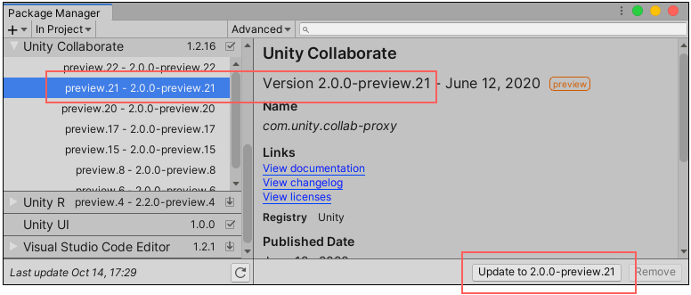

Choose the “context” that determines which packages appear in the list. The context might be the source of the package, such as a registry server, the Asset Store, or the Unity Editor itself (for built-in packages); however, the In Project context displays only those packages that are already installed in the current project, regardless of their origin.
For example, you can choose the My Assets context to show only Asset Store packages available to you in the list or choose the In Project context to show only Unity packages that are already installed in your project.
Use the search box to look for a Unity package or an Asset Store package by name.
These controls help narrow down which packages appear in the list view. This makes it easier to find what you are looking for or help you browse when you don’t know exactly what you want.
When you use both controls at the same time, you narrow the set of matches that appears in the list.
In Unity, open the Package Manager window (navigate to Unity’s main menu and go to Window > Package Manager).
If you are looking for a preview packageA preview package is in development and not yet ready for production. A package in preview might be at any stage of development, from the initial stages to near completion. See in Glossary, select Show preview packages from the Advanced drop-down menu.
Click the expander icon to the left of the package name in the list.
Partially expanded list shows only the currently installed version, the recommended update, and the See other versions link
If there are updates available, they appear above the See all versions link.
Click See all versions to see the list of all available versions for that package.
A scrollable list appears with all available versions.
Expanded list shows all available versions
Select any of these versions to see the details specific to that version.

The version appearing in the details pane and on the Update button match the selected version in the list
You can perform a variety of actions when you select a specific version:
You can click the View documentation link to open the documentation that matches this version.
You can click the View changelog link to see the list of changes from package creation up to this version.
You can click the View licenses link to look at any license information for this package specifically for this version.
You can see whether this package depends on any other packages, including the specific package name and version.
If this package is already installed and contains sample assets, you can click the Import into project button to save a copy of them under your project’s Assets folder.
If you don’t already have this package installed, you can install this version.
If another version of this package is already installed, you can update the package to this version.
If you previously installed this package but don’t want it anymore, you can remove the package.